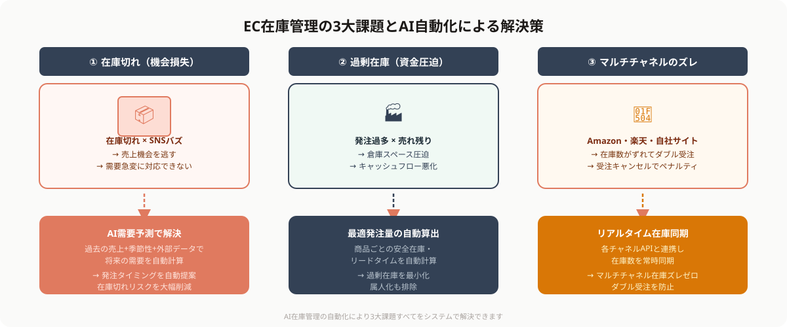
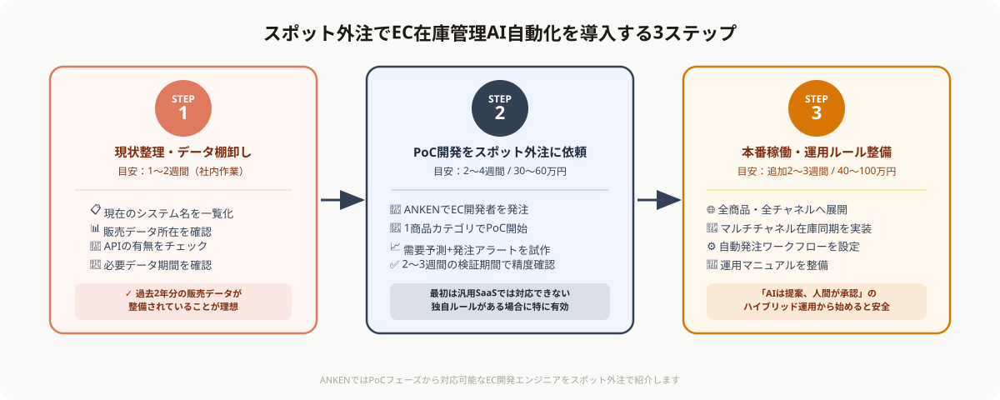

EC在庫管理の3大課題とAI自動化で解決できること
EC事業者の在庫管理には、規模を問わず共通する3つの課題があります。これらはいずれも、人手と勘に頼った管理体制を続ける限り根本的に解決しません。

課題①：在庫切れによる機会損失
「売れ筋商品の在庫が尽きて注文できなかった」というケースは、EC事業者にとって最も痛い損失の一つです。季節性の高い商品や、SNSバズで急に需要が増えた商品への対応が間に合わず、売上機会を逃してしまいます。手動管理では需要の急変に即応できないことが根本的な原因です。
AIによる需要予測を導入すると、過去の売上データ・季節性・外部データ（天気・イベント・トレンド）を組み合わせて将来の需要を自動計算し、発注タイミングを自動提案または自動実行できます。
課題②：過剰在庫による資金・倉庫スペースの圧迫
在庫切れを恐れて多めに仕入れた結果、売れ残りが倉庫を占拠する——ECあるあるの悩みです。デッドストックは保管コストを生み続け、キャッシュフローを圧迫します。担当者の「勘」で発注量を決めているケースでは、経験則が外れると大量の不良在庫につながります。
AIは商品ごとの売れ行きパターン・リードタイム・安全在庫を自動計算するため、「どの商品を何個・いつ発注するか」の最適解を常に更新し続けられます。人の経験則より精度が高く、属人化も防げます。
課題③：マルチチャネル在庫のズレによる受注キャンセル
Amazon・楽天・自社サイト・実店舗など複数チャネルで同じ商品を販売している場合、チャネル間の在庫同期がリアルタイムで行われていないと「在庫があるはずなのに注文が入った直後に他チャネルで売り切れ」というダブルブッキングが発生します。受注キャンセルはカスタマー満足度を下げ、ペナルティにもつながります。
AIと連携した在庫管理システムは、各チャネルの在庫数を常時同期し、リアルタイムで引き当てを行うため、マルチチャネル運営でも在庫ズレゼロを実現できます。
「導入コストが高そう」「社内にエンジニアがいない」「既存のカートシステムと連携できるか不安」——この3点が多くのEC事業者の障壁になっています。しかし、スポット外注を活用すれば固定費ゼロ・短期稼働でPoC（試作）から始めることができます。大規模投資なしに試せる環境が整っています。
AI在庫管理の具体的な機能と仕組み
AI在庫管理ツール・システムが実際に何をするのかを整理します。大きく4つの機能に分類できます。
①需要予測（デマンドフォーキャスティング）
過去の販売履歴・季節トレンド・プロモーション情報・外部データ（Google Trendsや天気予報API等）を組み合わせて、今後数日〜数週間の販売数を商品ごとに予測します。予測精度が上がるほど、発注量の最適化につながります。
②自動発注・発注アラート
商品ごとに設定した安全在庫量・発注リードタイム・発注ロットに基づき、発注タイミングになったら自動でサプライヤーに発注メールを送信、または担当者へアラート通知する機能です。完全自動化（自動発注）から、担当者承認フローを挟む半自動化まで柔軟に設定できます。
③マルチチャネル在庫同期
Amazon・楽天・Yahoo!ショッピング・自社ECサイト・実店舗POSなど複数の販売チャネルにまたがる在庫を一元管理し、各チャネルの在庫数をリアルタイムで同期します。各チャネルAPIとの連携実装がキモになる部分です。
④在庫分析ダッシュボード
商品ごとの回転率・在庫日数・ABC分析（売上貢献度の高い商品の分類）・デッドストック一覧をダッシュボードで可視化します。経営者や担当者が「どの商品に注力すべきか」を即座に判断できる環境を整えます。
スポット外注でAI在庫管理を導入する3ステップ

STEP 1：現状の在庫管理フロー・データ環境を整理する（1〜2週間）
最初に行うのは「現状の棚卸し」です。現在どのツールで在庫管理しているか（Excel・WMS・カートシステム付属の在庫管理機能等）、どのデータがどこに存在するか（販売履歴・仕入れデータ・在庫マスタ等）を一覧化します。
この工程はスポット外注のエンジニアに依頼する前に社内で1〜2日かけて整理しておくと、発注後の作業が大幅にスムーズになります。整理すべき情報は「使用しているシステム名・APIが公開されているか・過去何年分の販売データが存在するか」の3点です。
STEP 2：PoC（概念実証）開発をスポット外注に依頼する（2〜4週間）
現状整理ができたら、ANKENでEC・在庫管理システム開発の経験があるエンジニアをスポット外注で依頼します。最初から完全な本番システムを作るのではなく、「まず1〜2商品カテゴリに絞った需要予測+発注アラート機能のPoC」から始めることを推奨します。
PoCの目標は「AIの需要予測が実際の売れ行きとどの程度一致するか」を2〜3週間の試験期間で検証することです。技術的に動くだけでなく、現場担当者が実際に使えるかどうかを確認します。スポット外注なら2〜4週間・30〜60万円程度でPoCレベルの開発が可能です。
STEP 3：本番稼働・運用ルール整備（2〜3週間）
PoCの検証結果が良好であれば、スコープを拡大して本番稼働に移行します。具体的には、全商品カテゴリへの展開・マルチチャネル在庫同期の実装・自動発注ワークフローの設定・ダッシュボードの整備を進めます。
同時に、「AIが発注ミスをした場合の対処フロー」「担当者がシステムを override できる条件」など、運用ルールを文書化しておくことが重要です。完全自動化を目指すのではなく、「AIの提案を人間がレビューして承認する」ハイブリッド運用から始めると安全です。スポット外注のエンジニアに運用マニュアル作成まで依頼するとスムーズです。
費用感・期間の目安
スポット外注でEC在庫管理のAI自動化を進める場合の費用・期間感を整理します。
STEP 2 PoCフェーズ（需要予測+発注アラート、1商品カテゴリ）：2〜4週間・30〜60万円程度。既存カートシステムのAPIが整備されているか否かで変動します。Shopify・BASE・カラーミーショップ等の主要プラットフォームはAPIが充実しているため開発コストが低くなります。
STEP 3 本番稼働フェーズ（全商品・マルチチャネル対応）：追加で2〜4週間・40〜100万円程度。連携するチャネル数と商品SKU数によって費用が変わります。
継続運用・改善サポート（月1〜2回のスポット稼働）：月5〜15万円程度。予測精度の改善・新チャネル追加・季節対応のモデルチューニング等を継続的に依頼できます。
市販のSaaS型在庫管理ツール（月額数万〜十数万円）と比較した場合、スポット外注による自社開発は初期費用はやや高いが自社のカートシステム・業務フローに完全フィットした仕組みを作れる点が強みです。「汎用ツールでは対応できない独自のルールがある」場合にスポット外注の優位性が出ます。
💡 スポット外注依頼前に確認しておくと見積もりが早まる情報
①使用しているカートシステム・WMSの名前（ShopifyかBASEかAmazonセラーセントラルか等）、②過去の販売データの保存形式（CSV・Excelか、DBかAPI経由で取れるか）、③連携したいチャネル数と販売SKU数の目安——この3点を初回相談時に共有いただけると、対応可能なエンジニアとのマッチングが早くなります。
導入前に整備しておくべきこと
AI在庫管理の導入を成功させるために、スポット外注を依頼する前に社内で整備しておくべき点があります。
①過去の販売データを最低1〜2年分、整理した状態で用意する
需要予測AIの精度は学習データの質と量に大きく依存します。「Excelに散在している」「担当者ごとにフォーマットが違う」という状態では、データクレンジング（データ整備）に開発工数の半分以上を費やしてしまいます。商品コード・販売日・販売数が揃った形式に統一された2年分以上のデータが理想です。
②カートシステムのAPIドキュメントを確認する
AI在庫管理の実装はカートシステムのAPIと連携して初めて機能します。使用しているプラットフォームにAPIが公開されているか、在庫の読み書きAPIが提供されているかを事前に確認します。ShopifyやAmazon MWSは充実したAPIを持ちますが、古い独自カートシステムはAPI非公開のケースがあります。
③「誰が最終判断するか」の運用ルールを先に決める
AIが自動発注した場合に誰が責任を持つか、AIの提案を否定できる条件は何か——これを決めないまま本番稼働すると現場が混乱します。「AIは提案、人間が承認」という基本ルールを最初に組織内で合意してから開発に入ることを強く推奨します。
よくある質問
- Q. EC在庫管理の3大課題は何ですか？
- A. 在庫切れによる機会損失、過剰在庫による保管コスト、手動管理の限界の3つが主な課題です。
- Q. AI在庫管理はどんな機能がありますか？
- A. 過去データに基づく需要予測と自動発注の機能を組み合わせ、在庫切れと過剰在庫を同時に防げます。
- Q. 導入にかかる費用と期間はどのくらいですか？
- A. 取扱商品数や規模によりますが、3ステップで進めれば数週間〜1ヶ月程度が導入期間の目安です。
まとめ
EC在庫管理のAI自動化は、①需要予測による在庫切れ防止、②最適発注量の算出による過剰在庫解消、③マルチチャネルのリアルタイム同期の3つの軸で機能します。大手ECプラットフォームだけの話ではなく、中小EC事業者でもスポット外注を活用することで低コスト・短期間での導入が可能です。
最初から完全な自動化を目指す必要はありません。まず1商品カテゴリに絞ったPoCを2〜4週間のスポット稼働で試し、効果を検証してから段階的に拡大するアプローチが費用対効果の面でも最適です。社内のデータ整備と運用ルールの合意を先に進め、準備ができたらANKENで対応エンジニアを探してみてください。
ANKENには、ECプラットフォームAPI連携・需要予測モデル開発・在庫管理システム構築を得意とするエンジニアが登録しています。PoCフェーズからの2〜4週間スポット稼働に対応可能。まずは課題をご共有ください。
👉 無料で相談する（EC在庫管理のAI自動化を依頼する）「どこから手をつければいいか分からない」という段階からご相談いただけます。